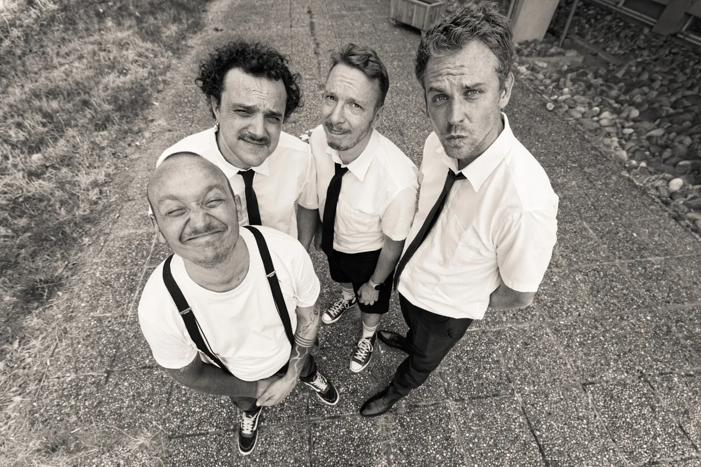
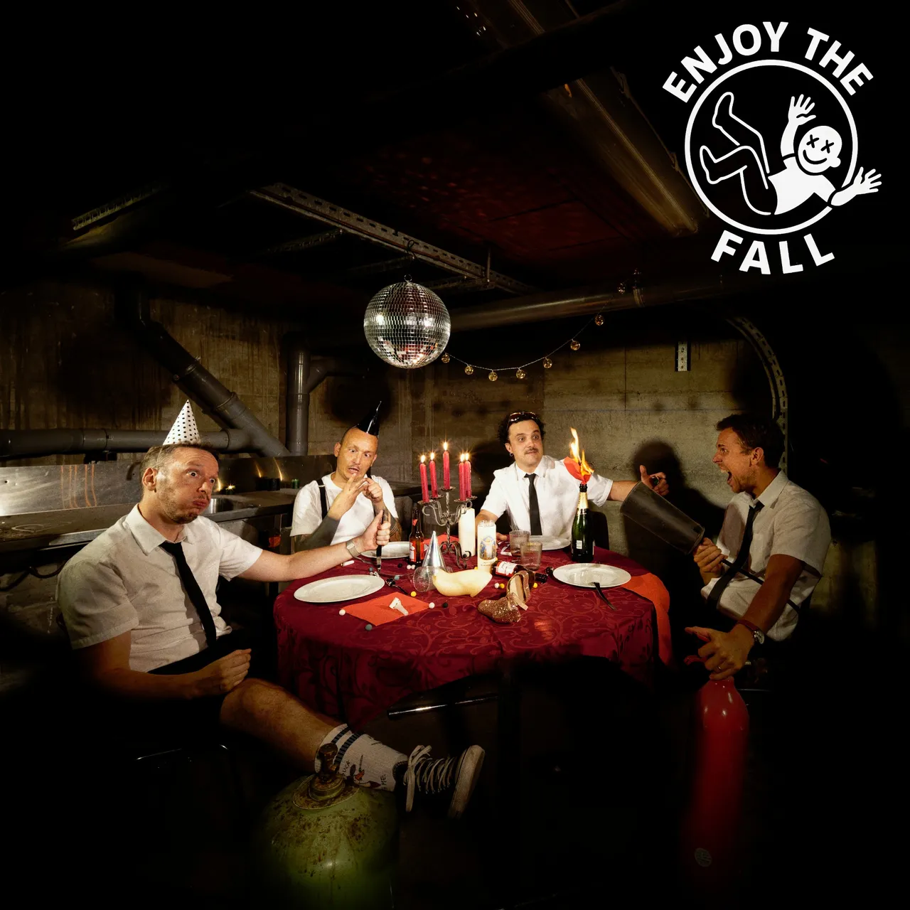
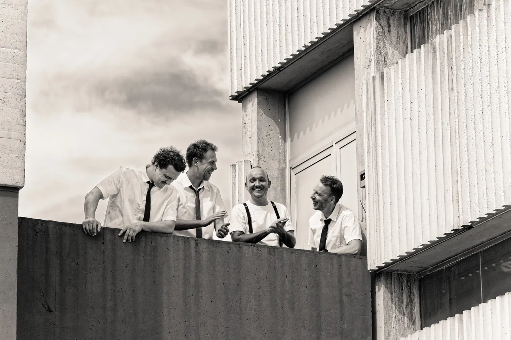

Groove Rock · Toulouse
Enjoy The Fall

Taillé pour la scène.
Un assaut rock entre racines hip-hop, énergie brute et mélancolie.
Enjoy The Fall / Toulouse, FranceLa suite, c’est GO.OD
01 / Musique

À venir
GO.OD
Premier EP — Janvier 2027
Sorties singles
Octobre & novembre 2026
02 / Live
On se voit
en concert
Programmer le groupe
Prochaines dates
Nouvelles dates bientôt.
En attendant, on se retrouve en vidéo.
Dates passées
L’agenda — repères 2025 / 2026
- Site du festival
Le Survolté Festival
Little O’Clock
Toulouse
L’Engrenage
Balma
L’Acoustic Bar
Montauban
AlamZic
Bagnères-de-Bigorre
03 / Vidéos
Montez le son.
La chaîne YouTubeLe lecteur YouTube est chargé uniquement à votre demande. Aucune lecture automatique.
Voir L’Acoustic Bar sur YouTube04 / Le groupe
Quatre Musiciens.
Un groupe.
Formé à Toulouse en 2025, Enjoy The Fall mêle rock, racines hip-hop et groove, entre énergie brute et mélancolie.
Après plusieurs mois d’écriture pensée pour la scène, le quatuor effectue une première résidence à l’AlamZic, puis se produit sur les scènes locales.
Ses membres ont joué au Taubertal Festival, au Bataclan et au Bikini au sein de leurs précédents projets.
L’histoire continue dans l’EPK
- Camille Laborde
- Batterie / Chant
- Nicolas Caillot
- Basse / Chant
- Benoit Staub
- Guitare / Chant
- Marc Breuillaud
- Chant
05 / Contact